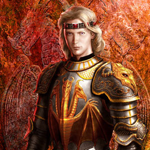
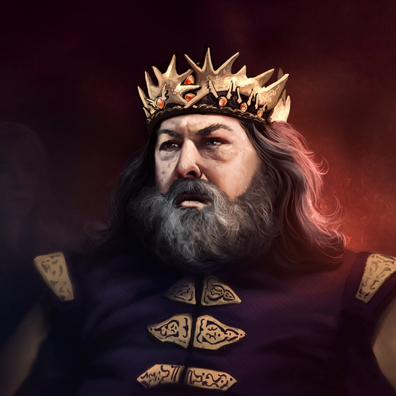
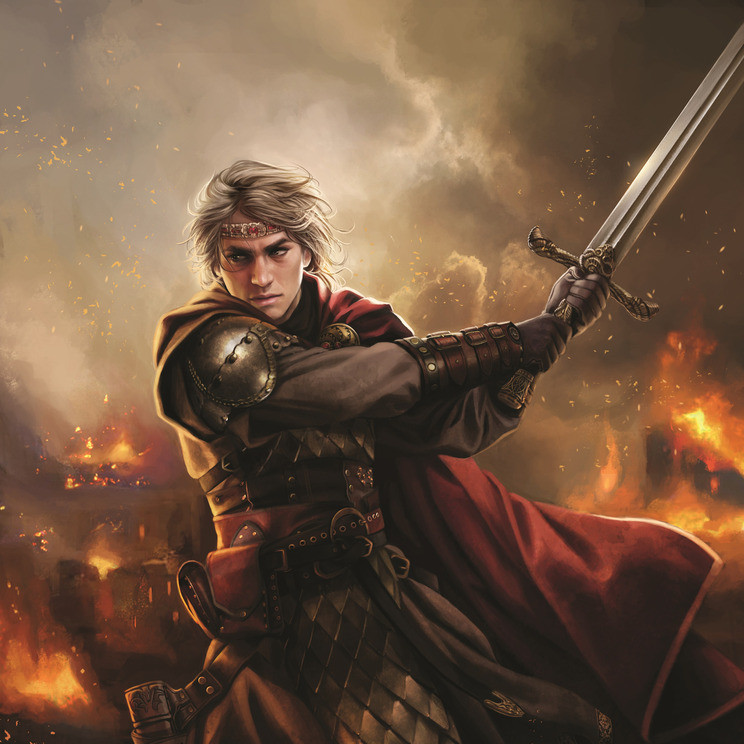

Né à la toute fin de l'an 153, le roi Daeron II Targaryen, dit Daeron le Bon (ou l'Hypocrite-né par ses opposants), était le fils aîné légitime et héritier d'Aegon IV Targaryen et de son épouse (et sœur) la reine Naerys Targaryen. Il accéda au trône assez tardivement alors qu'il s'approchait de la quarantaine. Filiforme, les épaules rentrées et doté d'une légère bedaine, Daeron n'avait jamais été un combattant mais il émanait de lui une grande force paisible. Son physique et la compagnie des mestres qu'il affectionnait le mettait en porte-à-faux avec la culture traditionnellement combattante des Sept Couronnes. Probablement du fait des nombreuses rumeurs remettant en cause sa légitimité (rumeurs provoquées par le comportement de son père, qui le pensait fils d'Aemon Chevalier-Dragon, en faveur de son demi-frèrebâtard Daemon Feunoyr), il portait la couronne élaborée de son père.

Roi Robert I Baratheon est le Seigneur des sept royaumes de Westeros et la tête de Maison Baratheon de Kings Landing. Robert a été couronné roi après avoir remporté la rébellion qui a été nommé d'après lui et prendre le Trône de Fer du roi Aerys II Targaryen, son cousin germain une fois enlevé. Robert a combattu la guerre pour reconquérir sa fiancée, Lyanna Stark, à l'aide de son frère, son ami, Lord Eddard Stark. En raison de la mort de Lyanna, cependant, Robert marier Cersei Lannister après la fin de la guerre pour assurer la stabilité politique. Robert a trois enfants avec Cersei: Joffrey, Myrcella et Tommen.

Né tout à la fin de l'an 281, le prince Aegon Targaryen était le fils du prince Rhaegar Targaryen et de la princesse Elia Martell. Il avait l'apparence typiquement valyrienne des Targaryen, à l'inverse de sa sœur qui était d'apparence plus dornienne. Peu de temps après sa naissance, Rhaegar confia à son épouse que leur fils était « le prince qui fut promis » et que « sienne est la chanson de la glace et du feu ».
Le prince Aegon est tué à la fin de la rébellion de Robert Baratheon, lors du sac de Port-Réal, le crâne fracassé contre un mur par serGregor Clegane alors qu'il n'avait que quelques mois. Son cadavre et celui de sa sœur, tous deux enveloppés dans des capes rouges, sont ensuite produits par lord Tywin Lannister aux pieds du nouveau roi Robert Baratheon. Contrairement à celui de sa sœur, le cadavre d'Aegon est méconnaissable, mais lord Tywin certifie son identité].